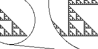

| The basic visual characteristic of simple fractals is self-similarity. |  |
| We illustrate the iterative process with an example: generating the gasket. | |
| The general formalism for constructing fractals is iterated function systems, IFS for short. |
Return to Finding IFS for Fractal Images